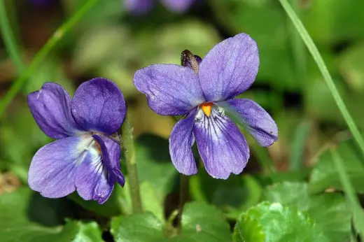

Edible flower or tea · Feb–Apr
Sweet violet
Viola odorata
Also called Duftveilchen, Violette odorante, Viola mammola
Sweet violet is a edible flower or tea you can forage from February to April across Switzerland. Low plant with heart-shaped leaves and scented violet or white flowers in early spring.

When is sweet violet in season in Switzerland?
Sweet violet is usually in season February to April. Timing shifts with weather, latitude and altitude.
Where does sweet violet grow in Switzerland?
Sweet violet grows across Switzerland. Regions: Jura, Swiss Plateau, Alps, Ticino and southern valleys.
How do you recognise sweet violet?
Low plant with heart-shaped leaves and scented violet or white flowers in early spring.
How do you harvest sweet violet?
Pick flowers on a dry, sunny morning once the dew has gone, when the scent is strongest. Take a few heads from each plant so it can still set fruit.
How do you eat sweet violet?
Candied flowers, violet syrup, salads.
How do you store sweet violet?
Syrup.
What is sweet violet good for?
Vitamin C.